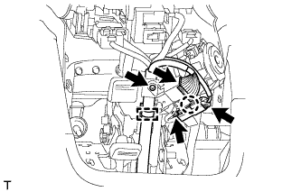

ЗАМОК ЗАЖИГАНИЯ > СНЯТИЕ |
| 1. СНИМИТЕ НИЖНИЙ КОЖУХ РУЛЕВОЙ КОЛОНКИ |
Выверните 2 винта.
 |
Освободите 2 захвата и снимите нижний кожух рулевой колонки.
| 2. СНИМИТЕ ЗАМОК ЗАЖИГАНИЯ В СБОРЕ |
 |
Для моделей с механической трансмиссией:
Отсоедините разъем замка зажигания и открепите зажим жгута проводов.
Выверните 2 винта и снимите замок зажигания.
|  |
Для моделей с автоматической трансмиссией:
Отсоедините разъем замка зажигания и разъем соленоида блокировки ключа и открепите зажим жгута проводов.
Выверните 2 винта и снимите замок зажигания.
Освободите захват и отсоедините жгут проводов соленоида блокировки ключа от замка зажигания.